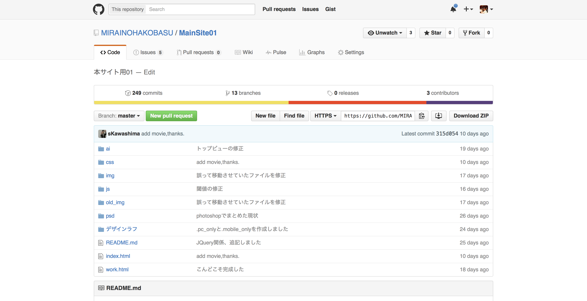
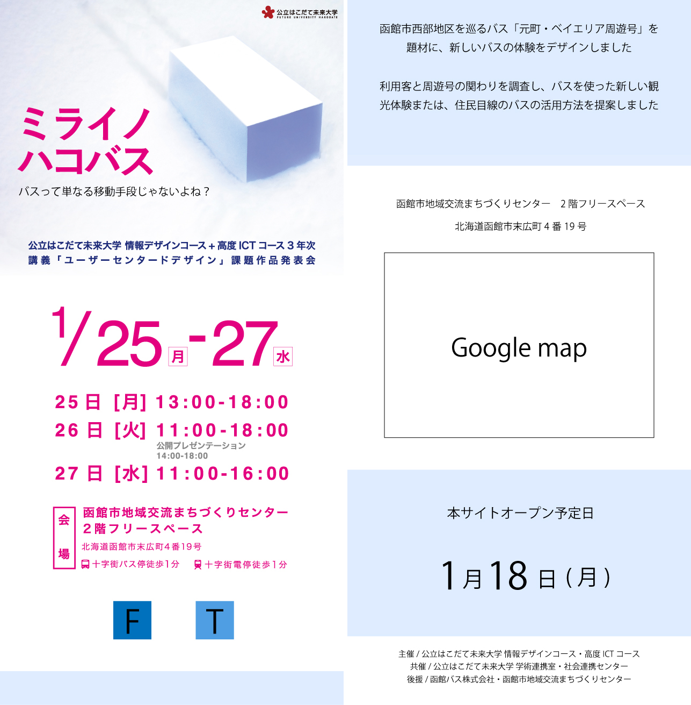
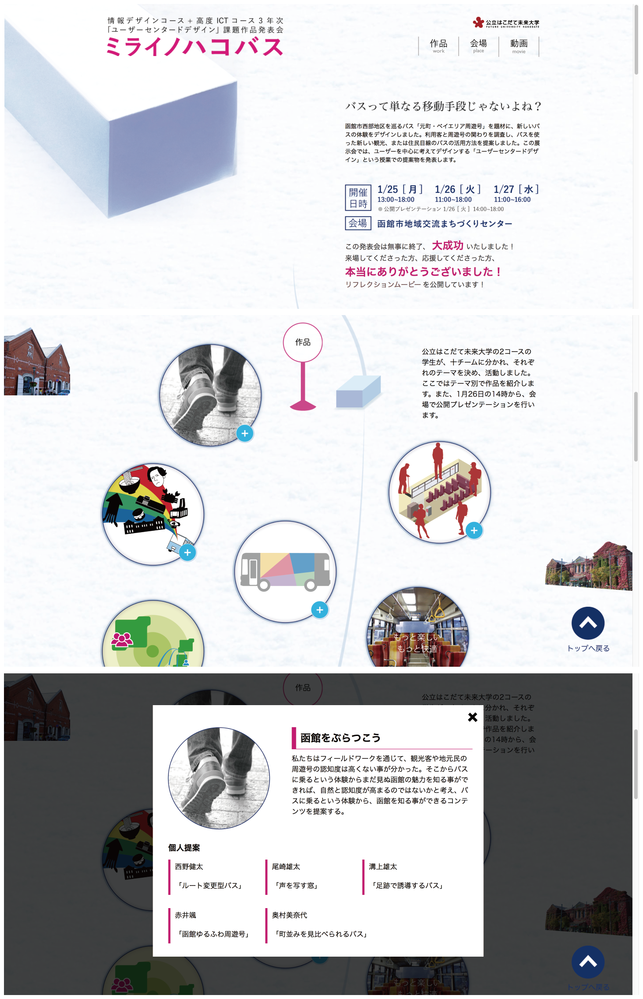

縦長にコンテンツを並べたwebサイト
3年デザインコースの展示会のwebページを制作をしました。
閲覧者にひと目で展示会の概要が伝わるようにするため、ファーストビューのデザインに着目しました。
グループ活動
担当箇所:コーディング/UX/サイトデザイン
使用ツール:Illustrator/Sublime text/GitHub
使用言語:HTML/CSS/JavaScript
製作期間:2015/12~2016/01
開発管理ツールとしてGitHubを使用
初の複数人でのweb開発だったため、GitHubを導入しました。
それぞれのメンバーがどんな仕事を持っているのかを管理し、わからない点があった時は持っている技術て助け合いをしながらの作業でした。
ファーストビューに着目したプレサイトのデザイン
スマートフォンからサイトを開いた際、画面内にどんな情報が入っているべきなのかを検討し、デザインしました。
ここでは、「展示会の名前」「開催日時」「開催場所」が画面に収まっているべきだと考え、配置しました。
縦にコンテンツを並べた本サイトのデザイン
全コンテンツを縦に並べ、雪道をバスに見立てた模型が走っていくようなデザインにしました。
スクロールに合わせてコンテンツが表示されるようにし、提案物はモーダルウィンドウで表しました。
モーダルウィンドウの実装およびデザインは、私の役割の一つでした。